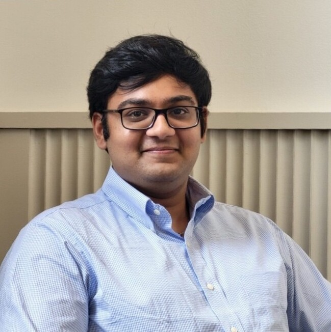

Tanay Nagar - तनय नगर
Independent researcher | NLP · Human-Centered AI · Computational Social Science · AI Safety
Independent researcher
NLP · Human-Centered AI · Computational Social Science · AI Safety

My work focuses on developing equitable, socially-aware language technologies that prioritize language equity for low-resource languages, uphold the socio-cultural nuances of diverse linguistic communities, and ensure robust human-AI dynamics.
I'm particularly interested in how we can:
- better evaluate/understand social subtleties across languages and cultures, both through and within language technologies;
- embed socio-ethical dynamics/intelligence within the creation of language technologies.
I earned a B.S. in Computer Science (Honors), a B.S. in Philosophy, and a certificate in leadership from the University of Wisconsin-Madison, and I am currently preparing for graduate study.
I'm grateful to have learned from and collaborated with Dr. Nitesh V. Chawla, Dr. Sarah Jung, Dr. Shamya Karumbaiah, Dr. Jacob Thebault-Spieker, and Dr. Margarita Ruiz Olázar across the  University of Wisconsin-Madison,
University of Wisconsin-Madison,  UW Health,
UW Health,  University of Notre Dame, and
University of Notre Dame, and  Universidad Comunera.
Universidad Comunera.
I'm always happy to connect; feel free to reach out via email or the links at the top of the page.
NLP
Human-Centered AI
Computational Social Science
AI Safety